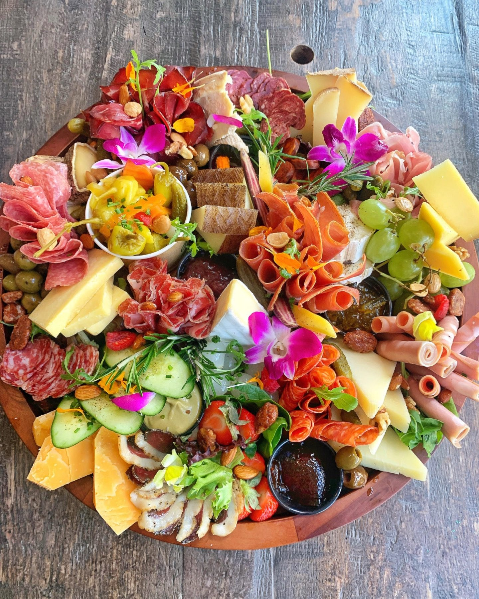
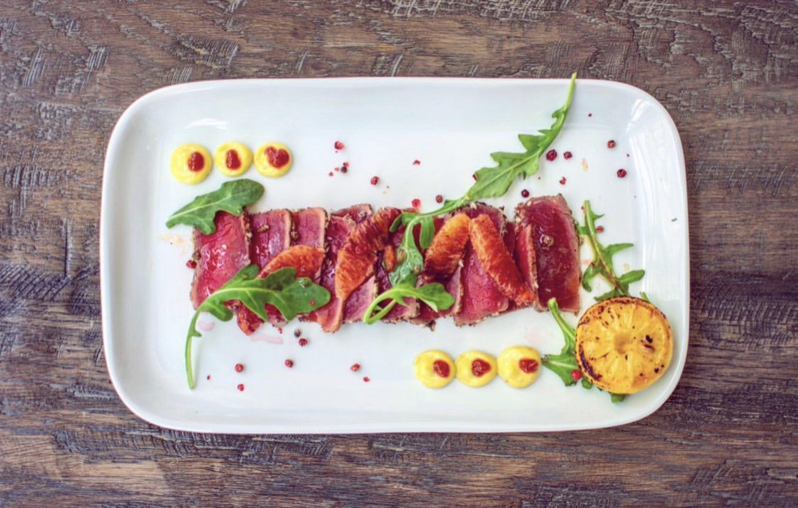

Charcuterie and cheese
Cheeses and cured meats. Build a planche, or order a board for the table.
Bacchus · Pinellas Park
Bacchus Wine Bistro serves Pinellas Park from St. Petersburg.
Bacchus Wine Bistro is based in St. Petersburg and works with customers from Pinellas Park. Call (727) 258-8566 to ask about timing and directions.
What to order
Boards, plates and a glass.

Cheeses and cured meats. Build a planche, or order a board for the table.

French onion soup, foie gras torchon, tuna carpaccio and steak flatbread.

Wine, imported beer and wine-based cocktails. Happy hour 3 to 6 PM.
4.7 ★ · 778 Google reviews
Stopped by for some pre-dinner drinks and an appetizer. The wine and food was incredible. Their happy hour is really good. Our server Brianna was also very attentive and knowledgeable. Highly recommend if you're a wine and charcuterie lover.
We stumbled in here randomly and were so pleasantly pleased at the caliber of the food and the experience. We split the lobster salad and grilled cheese (very unique and different, but delicious). Everything was perfection, and I could have that lobster salad every single day. We can’t wait to be back to try more. Our server, Ricky, was also awesome!
Delicious flat breads. The hostess was very pleasant and very caring. Enjoyed every bit. Got the French onion soup - which normally I will never order in hot weather - but was still light broth and delicious.
We stopped by Bacchus Wine Bistro for happy hour as a couple, looking to enjoy a few drinks before our dinner - and overall, it was a pleasant experience. We sat outside, which made for a really nice, relaxed atmosphere. We had both red and sparkling options, and both were enjoyable. To go with the drinks, we ordered the "Petite Planche du Chef", and the "Focaccia di Carne".